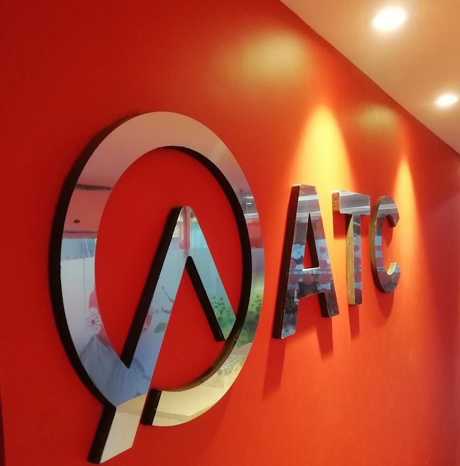

Work Experience Gallery
Data Experts Private Ltd.
Here are some photos from my time as a Supervision Engineer at Data Experts (Pvt.) Limited. These images showcase various aspects of my role, including site inspections, quality assurance, and safety management. They reflect my commitment to maintaining high standards in design compliance, environmental adherence, and community relations. Each photo provides a glimpse into the day-to-day responsibilities and achievements in my position.

A-WING TAGUCHI CO. LTD.
Here are some photos from my tenure as a Site Engineer at A Wing Taguchi Co. Ltd. (ATC). These images highlight my involvement in overseeing site operations and managing construction activities. They capture key moments of coordinating with stakeholders, ensuring adherence to project specifications and timelines, and maintaining quality standards throughout the project lifecycle. Each photo illustrates the hands-on approach and dedication required to meet project goals effectively.
Young International Garment Ltd, EPZ Chittagong
Here are some photos from my role as a Safety Engineer at Young International Garment Ltd, EPZ Chittagong. These images capture my work on a demolition and dismantling project, where I focused on implementing and enforcing safety measures to ensure a safe working environment. The photos illustrate key activities such as risk assessments, safety training sessions, and adherence to safety regulations and standards. They provide a visual representation of my commitment to maintaining high safety standards throughout the project.
Epic Properties Ltd
During my 6-month Industrial Training in Civil Engineering, I gained hands-on experience in site supervision, project management, and construction safety. Working alongside experienced engineers, I applied theoretical knowledge to real-world projects, enhancing my skills in team collaboration and problem-solving.